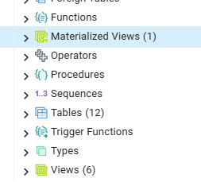

5 Harjoitus 4: Tavalliset ja materialisoidut näkymät
Harjoituksen sisältö - Harjoituksessa tutustutaan eri tyyppisten näkymien luontiin ja käyttöön
Harjoituksen tavoite - Harjoituksen opiskelija osaa luoda ja muokata näkymää, ja hänellä on käsitys näkymien käyttötarkoituksesta.
5.0.1 Valmistautuminen
Avaa pgAdmin selaimeen ja kirjaudu sisään. Avaa Query Tool (Valitse trainingdatabase -> Ylhäältä Tools -> Query Tool).
5.1 Harjoitus 4.1: tavallinen näkymä
Edellisessä harjoituksessa muodostimme kyselyn teiden varsilla olevien puiden löytämiseksi. Tehdään tämän perusteella uusi kysely, johon haluamme liittää kuhunkin tulokseen vielä tiedon siitä, missä kaupunginosassa puu on
SELECT ...-- käytetään esimerkiksi common table expressionia
WITH teiden_puut AS (
<Aiempi kysely>
)
SELECT teiden_puut.*, k.nimi_fi FROM teiden_puut
JOIN kaupunginosajako k
ON ...;
-- Millä ST-funktiolla spatiaalinen predikaatti, joka
-- palauttaa tosi kun puu tietyn kaupunginosan sisälläWITH teiden_puut AS (
SELECT DISTINCT p.* FROM puurekisteri p
JOIN liikennevaylat l
ON ST_DWithin(p.geom, l.geom, 5)
)
SELECT teiden_puut.*, k.nimi_fi FROM teiden_puut
JOIN kaupunginosajako k
ON ST_Within(teiden_puut.geom, k.geom);Luodaan tämän kyselyn perusteella ensin varsinainen tietokantataulu seuraavalla tavalla:
CREATE TABLE IF NOT EXISTS tienvarren_puut AS (
<kysely>
);Luodaan tämän jälkeen vaihtoehtoisesti samasta kyselystä normaali näkymä syntaksilla:
CREATE OR REPLACE VIEW view_tienvarren_puut AS (
<kysely>
)Kumman luomiseen kului enemmän aikaa? Kumpi on nopeampi käytössä?
5.2 Harjoitus 4.2: Materialisoitu näkymä
Luo nyt vastaava näkymä materialisoituna, eli kyselyn palauttama data tallennetaan erikseen levylle tavallisen taulun tapaan. Materialisoidun näkymän luomisen syntaksi on (vrt. syntaksia taulun ja tavallisen näkymän tapaukseen):
CREATE MATERIALIZED VIEW IF NOT EXISTS <nimi> AS ( <kysely>);CREATE MATERIALIZED VIEW IF NOT EXISTS mview_tienvarren_puut AS (
WITH teiden_puut AS (
SELECT DISTINCT p.* FROM puurekisteri p
JOIN liikennevaylat l
ON ST_DWithin(p.geom, l.geom, 5)
)
SELECT teiden_puut.*, k.nimi_fi FROM teiden_puut
JOIN kaupunginosajako k
ON ST_Within(teiden_puut.geom, k.geom)
);- Huomasitko jälleen materialisoidun näkymän luomisen ja kyselyn suhteelliset kestot?
Nämä eri tyyppiset näkymät löytyvät pgAdminin valikosta eri valikkojen alta:

- Onko valikkojen alta löytyvissä kohteissa eroja?
5.3 Harjoitus 4.3: Näkymien muokkaus ja datan päivitys
Näkymät toimivat monin tavoin tavallisen tietokantataulun kaltaisesti, mutta siihen on valittu ja yhdistelty sen luovalla SQL-kyselyllä kussakin tapauksessa relevantit tiedot. Kenties tietoja voisi myös kätevästi päivittää tätä kautta?
Testataan datan päivitystä kuhunkin tässä harjoituksessa luotuun näkymään:
UPDATE tienvarren_puut
SET kadunnimi = 'JOKUKATU'
WHERE fid = 1;UPDATE view_tienvarren_puut
SET kadunnimi = 'JOKUKATU'
WHERE fid = 1;UPDATE mview_tienvarren_puut
SET kadunnimi = 'JOKUKATU'
WHERE fid = 1;Huomataan ainakin, että:
Taulun datan muokkaus onnistuu, joten komento toimii
Näkymiä ei voinut muokata, vaan se antoi virheen
Itse asiassa tavallisten näkymien täytyy toteuttaa useita ehtoja, jotta niiden dataa voisi suoraan muokata: dokumentaatio (alaluku “Updatable Views”). Tähän palataan vielä seuraavassa harjoituksessa, mutta muokataan vielä samalla tavoin lähtötaulun dataa, ja tarkastellaan sen vaikutusta näkymiin.
UPDATE puurekisteri
SET puistonnim = 'EI NIMEÄ'
WHERE puistonnim IS NULL;Tarkista nyt vastaavasti, mikä oli vaikutus kuhunkin tauluun ja näkymään:
SELECT * FROM tienvarren_puut WHERE puistonnim = 'EI NIMEÄ';SELECT * FROM view_tienvarren_puut WHERE puistonnim = 'EI NIMEÄ';SELECT * FROM mview_tienvarren_puut WHERE puistonnim = 'EI NIMEÄ';5.3.1 Materialisoitujen näkymien päivitys
Materialisoitu näkymä on siis taulunkaltainen näkymä, jonka data on tallennettu fyysisenä kopioidaan levylle, eikä siis päivity vaikka sen määrittelevässä luontikyselyssä esiintyvien taulujen data muuttuu. Kysely materialisoitujen näkymien kautta on kuitenkin yleensä tehokkaampaa, sillä ne sallivat indeksoinnin. Ne ovat hyviä käyttää varsinkin silloin, kun tulosten ei tarvitse olla koko ajan ajantasaisia tai kun siihen liittyvä data muuttuu vain harvoin tai tietyin väliajoin. Tällöin voidaan ajaa (esimerkiksi ajastetusti) komento joka päivittää materialisoidun näkymä. Se tapahtuu nyt komennolla
REFRESH MATERIALIZED VIEW mview_tienvarren_puut;joka käytännössä korvaa materialisoidun näkymän aiemman sisällön.
Aja edellinen komento ja tarkastele materialisoitua näkymää uudelleen
SELECT * FROM mview_tienvarren_puut;jolloin huomaat että data on päivittynyt.
Lisätietoja: https://www.postgresql.org/docs/current/sql-refreshmaterializedview.html